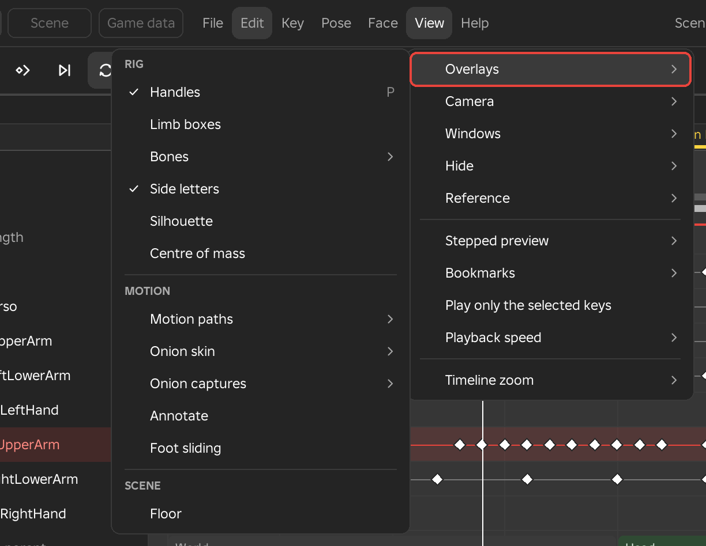
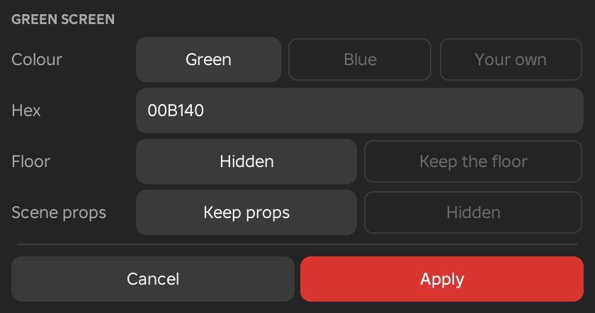

View Menu
The View menu controls what you see while you work and how the clip plays back. It holds the overlays drawn over the rig, the camera, the open windows, hidden limbs, the reference video, and playback speed and zoom. Nothing in it changes the animation or the saved clip. The Animate workspace shows every row, and the Scene and Game data workspaces show a shorter menu.
Overlays
Overlays are aids drawn over the rig and the timeline. Each one is switched on and off from its own row, and the Animate workspace groups them under Rig and Motion. The same list opens when you right-click the eye button on the toolbar. The list also holds Spin Check, which belongs to the Pose menu and is described under Spin Check.

Handles
- Menu
- View ‣ Overlays ‣ Handles
- Shortcut
- P
- Workspace
- Animate
Handles are the rings and arrows you drag to turn and move the selected limb. The row is ticked while they show, which is how Framez starts. Switching them off clears the rings from the rig so you can look at the pose on its own, and switching them on again brings them back on the selected limb.
Example
For example, switch the handles off while you review a pose from the game's camera angle, and on again when you go back to posing.
Controls
- Menu
- View ‣ Overlays ‣ Controls
- Needs
- A control rig
- Workspace
- Animate
Controls shows or hides the shapes of the control rig. The row is ticked while they show, which is how Framez starts. It is greyed, with the reason, until the rig has a control rig. With the shapes hidden, you select limbs by clicking the limbs themselves. Framez keeps the choice for the next time you open it.
Example
For example, hide the controls to check a pose from the game's camera angle, and show them again to go on posing.
See Also
Limb Boxes
- Menu
- View ‣ Overlays ‣ Limb boxes
- Workspace
- Animate
Limb boxes draws a box round each limb of the rig. The boxes are off when you first use Framez. Without them you select a limb by clicking the limb itself, and the selected limb is outlined in orange.
Example
For example, switch the boxes on when a limb is thin or small enough to be awkward to click, and off again once it is selected.
Bones
- Menu
- View ‣ Overlays ‣ Bones
- Workspace
- Animate
Bones draws each joint of the rig as a bone, from the point the limb turns about to the next joint down the chain. For a hand, a foot, the head or a held weapon the bone runs to the far end of the part. Clicking a bone selects its limb, and the bone of the selected limb is orange. Because the bones are drawn over the rig, you can reach a joint that sits inside a large part, armour or a weapon.
A limb you have hidden in the view draws no bone. The settings are kept for the next time you open Framez.
A skinned rig, which is a mesh animated through its bones, opens with the bones switched on, drawn as Octahedral with X-ray. Clicking a drawn bone selects it, and clicking the skin selects the nearest bone of that mesh. The bone under the cursor is drawn white. Choosing a style yourself turns this automatic setting off.
Options
- Off, Octahedral, Stick
- Off draws no bones. Octahedral draws each bone as a diamond with its widest point near the joint, and Stick draws a thin rod with a ball at the joint. Bones are off at first on a rig made of plain parts.
- X-ray
- Draws the bones through the body. When it is off, the body hides the bones behind it. It is on by default.
- Selected only
- Draws only the bone of the selected limb.
- Transparency...
- Opens a small dialog with a See-through value from 0% to 90%, which sets how faint the bones are. The default is 35%, and the bones follow the value as you drag it.
Example
For example, with a sword and a long sleeve covering the forearm, switch the bones on as Octahedral with X-ray and select the forearm by its bone.
Side Letters
- Menu
- View ‣ Overlays ‣ Side letters
- Workspace
- Animate
An R6 arm or leg is the same colour on every side, so a limb that has turned a quarter of a turn about its own length can look unchanged. Side letters puts a colour and a letter on each face of every arm and leg. The letters are F for the front, B for the back, L for the left, R for the right, U for the top and D for the bottom. Whichever face is turned toward you shows how the limb is twisted.
The letters show while you pose and while the clip plays, and they are on when Framez starts. Left and right are the character's own left and right.
Example
For example, if a forearm should point its palm forward and the letter facing you is L instead of F, the limb is turned a quarter turn too far.
Silhouette
- Menu
- View ‣ Overlays ‣ Silhouette
- Workspace
- Animate
Silhouette draws the whole rig as one flat black shape. A pose that reads clearly as an outline will read clearly in the game, where characters are small and seen against a busy background.
Example
For example, switch the silhouette on and look from the game's camera angle to check that a sword swing or a crouch is easy to recognise, then switch it off to carry on.
Centre of Mass
- Menu
- View ‣ Overlays ‣ Centre of mass
- Workspace
- Animate
Centre of mass draws a dot where the weight of the body is, with a line down to the floor and a disc where the line lands. Each part of the rig counts in proportion to its size, and held weapons are left out. A trail of small dots shows where the centre travels over the clip.
The colour tells you whether the pose is balanced. It is green while the dot is over the feet that are on the floor, red when the dot is outside them and the body would tip over, and grey when no foot touches the floor.
Example
For example, when you pose a deep lunge or a pose on one leg, the dot turns red as soon as the torso leans past the planted foot, which tells you to bring the hips or the other leg across.
Motion Paths
- Menu
- View ‣ Overlays ‣ Motion paths
- Right-click
- The motion paths button on the toolbar
- Workspace
- Animate
Motion paths draw the route that the hands, feet, head, weapon tip or torso travel through the clip. A dot marks every frame, so the spacing of the dots shows the timing. Dots close together mean a slow stretch, and dots far apart mean a fast one. The keys of the limb are larger white dots, and a ring shows where the point is at the playhead. The part of the path before the playhead is dimmed toward grey, and the part after it is drawn in full.
The paths are worked out from the keys, so the rig never moves to draw them. They are also editable. You can reshape the motion by dragging the dots.
You edit a path on the dots themselves. Pressing a key dot moves the playhead to that key and selects its limb, and dragging then moves the point. The point follows the mouse on a plane that faces the camera, and pressing X, Y or Z while you drag keeps it on that world axis, with the same key again freeing it. An IK hand or foot reaches for the point, any other limb turns to aim at it, and dragging the torso path moves the root. Letting go keys the result as one undo step. Esc puts the drag back.
Pressing a frame dot between two keys works the same way and makes a new key there. Holding Shift while you drag a key dot along the path moves the key to another frame and keeps its pose. Clicking a key dot without dragging shows two handles along the path. The length of a handle is the speed with which the point leaves or reaches the key, so a longer handle is faster and a shorter one gives an ease. Letting go sets the easing of that span.
Options
- Show motion paths
- Turns the paths on or off. Choosing a colour mode of By speed also turns them on.
- Selected only
- Draws the path of the selected limb only. A joint with no point of its own follows the first point down its chain, so an upper arm shows the path of its hand. With nothing selected, the limbs ticked under Show paths for are drawn faintly, without frame ticks or keys. It is on by default.
- Show paths for
- Hands, Feet, Head, Weapon tip and Torso (root motion) can each be ticked. Hands, Feet and Weapon tip are ticked at first.
- Colour
- By limb gives each limb its own colour, warm on the right side and cool on the left. By speed colours each stretch from blue for slow through green and yellow to red for fast, with the key dots left white. With By speed, One scale for every path uses one speed range for all the paths, and with it off each path runs from its own slowest speed to its fastest.
- Length
- Whole clip draws the full path. Around current frame draws a stretch on each side of the playhead, 30 frames each way unless you change it in the Preferences.
- Edit path dots
- With Drag moves the point, dragging a key dot reshapes the arc. With Drag moves the key in time, dragging a key dot along the path retimes the key instead. Holding Shift gives the retiming drag for a single drag in either mode.
Example
For example, to make a sword swing travel in a clean arc, turn on the weapon tip path, look for dots that bunch up or jump off the curve, and drag the key dot nearest the bump until the line runs smoothly.
Notes
The Preferences window has a Motion paths group with Length, Frames each side from 1 to 600, and Frame numbers, which can be Off, Every key or Every 5 frames. A run of keys on every frame shows only its two ends.
Onion Skin
- Menu
- View ‣ Overlays ‣ Onion skin
- Right-click
- The onion button on the toolbar
- Workspace
- Animate
Onion skin shows ghosts of the rig at the keys on either side of the playhead, so you can compare the pose you are working on with the ones around it. The ghost before the playhead is dark and the ghost after it is white. A ghost part is drawn only where it differs from the rig as it stands, so you see the part of the pose that changed.
The ghosts are posed from the keys in memory, so they follow every change the moment you make it. With the default settings there is one ghost on each side, taken at the keys.
Options
- Show onion skin
- Turns the ghosts on or off.
- At keys, Every 2 frames, Every 4 frames
- Chooses which frames get a ghost. At keys uses the neighbouring keys, and the other two use frames at a regular step.
- Selected limb only
- Draws ghosts of the selected limb and whatever it holds, and leaves out the rest of the rig.
- Onion settings...
- Opens a dialog with every choice in one place. It sets At keys or Every N frames, the step in Every from 1 to 30 frames, how many ghosts to draw Before and After the playhead from 0 to 5 each, whether the ghosts Fade with distance or keep the Same strength, and whether it draws the Whole rig or the Selected limb.
Example
For example, when you lower an arm in a breakdown, the ghosts of the keys before and after show whether the new pose sits between them or overshoots.
Notes
The Preferences window has an Onion skin group with the Before colour, the After colour and the Ghost strength, which runs from 10% to 200%.
See Also
Onion Captures keeps a pose as a ghost that stays where it is.
Onion Captures
- Menu
- View ‣ Overlays ‣ Onion captures
- Right-click
- The onion button on the toolbar
- Workspace
- Animate
Onion captures keep the rig as it stands now as a pink ghost that stays in place while you scrub and key. You can keep up to four, with the newest the clearest. Capturing a fifth removes the oldest. As with the onion skin, a part is drawn only where it differs from the rig, so a capture appears once the rig moves away from it.
Captures belong to the rig they were taken on and stay until you clear them or let go of the rig. They are not saved with the animation.
Options
- Capture this pose
- Keeps the pose of the whole rig at the playhead.
- Apply capture
- Puts the captured pose back on the rig and keys it at the playhead as one undo step. With more than one capture, the row opens a list of them by frame, with the newest marked. It is greyed until a pose is captured.
- Apply to the selected limb
- Keys only the selected limb, and any others selected with it, from the newest capture.
- Apply to the selected keys
- Gives each selected key the pose its limb had in the newest capture.
- Show captures
- Shows or hides the pink ghosts without removing them.
- Clear captures
- Removes every capture. It is greyed when there are none.
Example
For example, capture the contact pose of a walk at the first frame, move on to the last frame of the cycle, and apply the capture there so the clip finishes on the pose it started from.
Annotate
- Menu
- View ‣ Overlays ‣ Annotate
- Workspace
- Animate
Annotate lets you draw lines over the viewport, the way you would sketch on a printed frame. A bar appears at the top of the viewport and the pen takes the mouse, so a drag draws a line instead of selecting something. A line is drawn on a sheet that faces the camera and passes through the selected limb, or through the rig when nothing is selected, so the line stays with the rig when you orbit the camera.
A drawing shows from the frame it was drawn on until the next frame that has a drawing, or on every frame if you draw it with Every frame. Ctrl+Z takes the last line back. The drawings are saved with the animation and never reach the game clip. The rings, the limb boxes and the bones are hidden while the pen is on, and choosing another Studio tool ends it.
Options
- Colour
- Four dots on the bar choose red, yellow, cyan or white.
- Pen, Eraser
- The pen draws. The eraser rubs out every whole line it touches, and holding Ctrl while you drag does the same with the pen.
- Thin, Thick
- Sets the width of new lines.
- This frame on, Every frame
- This frame on shows the drawing from this frame until the next drawn frame. Every frame shows it throughout the clip.
- Clear frame, Clear all
- Clear frame removes the drawing on the current frame, and Clear all removes every drawing.
- Done
- Puts the pen down. Esc does the same. Choosing the row again also ends it.
- Drawings
- A submenu that appears under Annotate once the clip has drawings. Show drawings shows or hides them, Clear this frame's drawing removes the one showing on the current frame, and Clear all drawings removes every drawing.
Example
For example, sketch the arc a sword swing should follow on the key frame, mark where a foot has to land, or leave a note on a frame you want to fix later.
Foot Sliding
- Menu
- View ‣ Overlays ‣ Foot sliding
- Workspace
- Animate
Foot sliding looks through the clip for frames where a foot that is on the floor moves along it, and marks each one with a small red mark in the events lane above the timeline. Pointing at a mark names the frame and the foot that slides. When the search finds nothing, the message says there are no sliding feet.
Fixing the clip with Fix Foot Sliding or Foot Lock updates the marks, so you can watch them disappear.
Example
For example, switch the marks on after you finish a walk cycle, and look for runs of marks near the contact frames where the stride is too long for the feet to stay put.
Floor
- Menu
- View ‣ Overlays ‣ Floor
Floor adds a flat grey slab, 64 studs square, directly under the lowest point of the rig, so you have a surface to judge foot contact against at the height the character stands. The slab does not collide with anything and is not saved with the place. The row is ticked while the slab is there, and choosing it again removes it. Undo reverses either step.
The row is in the View menu of every workspace.
Example
For example, if the rig stands in open sky or on terrain you do not want to judge against, add the floor first, and then check that the feet touch it on the contact frames.
Camera
The Camera submenu moves Studio's camera around the rig, saves the angles you want back, and holds the navigation and green screen options.
Frame Selected
- Menu
- View ‣ Camera ‣ Frame selected
- Shortcut
- F, Num .
Frame selected moves the camera back along its line of sight until the selected limb fills the view. The camera keeps its direction and glides to the new place over a fraction of a second. With no limb selected it frames the whole rig.
Selecting a limb also sets the point Studio's camera orbits around to that limb's joint, so after you select a limb, dragging to orbit turns the view around it.
Example
For example, select a hand, press F to bring it close, and check the finger and wrist pose before pressing F with nothing selected to step back to the whole body.
Frame All
- Menu
- View ‣ Camera ‣ Frame all
Frame all moves the camera back until the whole rig fits in the view, keeping the direction the camera looks in. It frames the whole body whichever limb is selected.
Views
- Menu
- View ‣ Camera ‣ Views
The Views submenu places the camera at a standard angle on the whole rig. The angles follow the character, not the world, so Front is always the side the character faces however it is turned. The camera glides to the new view.
Options
- Front, Back
- Looks at the character from the front, or from behind. The shortcuts are Num 1 and Ctrl+Num 1.
- Right, Left
- Looks at the character from its right side, or from its left. The shortcuts are Num 3 and Ctrl+Num 3.
- Top
- Looks straight down at the character. The shortcut is Num 7.
- Behind
- Sits above and behind the character, looking down a little, the way a third-person game camera does. The shortcut is Num 9.
Example
For example, use Behind to judge a run or a dodge as the player will see it, and the Right and Left views to check how far a leg or arm swings.
Saved Views
- Menu
- View ‣ Camera ‣ Saved views
A saved view keeps the position and field of view of Studio's camera, so you can come back to it later. The views are kept with the animation, one set for each animation, and each is stored relative to the rig's root, so moving the rig does not lose them. They are written when you save the animation.
Saved views you have made are listed at the top of the submenu. Choosing one glides the camera there. Once there are saved views, the submenu also has Rename view and Delete view, each listing the views by name. Deleting asks first.
Options
- Save this view as Reference
- Saves the camera as the view named Reference, which sits first in the list. It is meant for the angle of a reference video, so the rig and the recording are seen from the same side. If a Reference view already exists, you are asked before it is replaced.
- Save this view as a new one
- Saves the camera under the next free name, View 1, View 2 and so on.
Example
For example, save the camera behind the character as Reference when you start posing against a video, and return to it whenever you have orbited away.
Follow Rig
- Menu
- View ‣ Camera ‣ Follow rig
With Follow rig ticked, the camera keeps its distance from the torso while the clip plays, so a rig that travels stays in the frame. When playback stops, the camera stays where it ended up. The camera does not follow while you scrub.
Example
For example, tick it when you play a leap or a dodge roll that carries the rig across the place, so you can watch the whole move without chasing it by hand.
Blender Navigation
- Menu
- View ‣ Camera ‣ Blender navigation
Blender navigation changes how the mouse moves Studio's camera. It orbits, pans and zooms the way Blender's viewport does, so one set of mouse moves works in both programs. It applies while the Framez window is open, and switching it off gives you Studio's own navigation back.
The view turns around a pivot. The pivot is the selected limb's joint or the centre of what you last framed, as long as that point is ahead of the camera and on screen. Otherwise it is the point under the middle of the view, or a point 12 studs ahead when nothing is there.
Options
- Middle drag
- Orbits around the pivot.
- Shift and middle drag
- Pans, so the point at the pivot's depth stays under the cursor.
- Ctrl and middle drag
- Zooms. Dragging up moves the camera closer.
- Wheel
- Zooms toward the pivot. Ctrl and the wheel pans sideways, and Shift and the wheel pans up and down.
- Number pad
- 4, 6, 8 and 2 orbit in steps of 15°, and holding Ctrl pans instead. + and - zoom, and . frames the selected limb. The keys 1, 3, 7 and 9 choose the standard views described under Views.
Example
For example, if you also animate in Blender, switch it on and keep the same hand movements for orbiting around a character in both programs.
Notes
The Preferences window has a Navigation group with the Orbit speed and Pan speed, each from 10% to 400%, and Zoom toward the cursor, which makes the wheel close in on the point under the mouse. The number pad keys can be changed in the keyboard shortcuts window.
Green Screen
- Menu
- View ‣ Camera ‣ Green screen
- View ‣ Camera ‣ Green screen settings...
Green screen shows the rigs over one flat colour in the viewport, in the camera preview and in a playblast, ready to be keyed out in a video editor. Everything else in the place is hidden from the view only. Nothing in the place changes, and a saved place keeps everything as it was. The colour box follows the camera, so it stays behind the rigs as you orbit.
Fog and the atmosphere's haze would tint the colour, so they are switched off while the green screen shows and put back when you switch it off. Terrain cannot be hidden from a plugin, so on a place with terrain the status line says that the terrain still shows.
Options
The Green screen settings... row opens a dialog, which applies its values when you press Apply.
- Colour
- Green is 00B140, Blue is 0047BB, and Your own uses the hex code you type in the box below. A code is six hex digits. The Preferences window also holds the colour choice.
- Hex
- The six-digit colour code, such as 00B140.
- Floor
- Hidden removes the ground, and Keep the floor leaves the ground under each rig in view.
- Scene props
- Keep props leaves the props of the scene in view, and Hidden hides them with everything else.
Example
For example, to film a character for a video with a clean background, switch the green screen on, choose a camera angle, and record a playblast to cut out in your editor.

Windows
The Windows submenu opens and closes Framez's windows and switches the workspace. Its list depends on the workspace, and a window that is open shows a tick.
Inspector
- Menu
- View ‣ Windows ‣ Inspector
Opens or closes the Inspector, the window that shows the numbers and settings of whatever is selected. It is available in all three workspaces. Framez opens it docked on the right the first time, and after that Studio remembers whether it was open.
See Also
The Inspector page describes every section.
Reference Video
- Menu
- View ‣ Windows ‣ Reference video
- Workspace
- Animate
Opens or closes the Reference video window, which plays a video or a set of image frames beside your animation, locked to the timeline.
See Also
The Reference Video page describes the window.
Poses
- Menu
- View ‣ Windows ‣ Poses
- Workspace
- Animate
Opens or closes the Poses window, where you save poses with a picture of each and key them back with a click.
See Also
The Poses page describes the window.
Curve Editor
- Menu
- View ‣ Windows ‣ Curve editor
- Workspace
- Animate
Opens or closes the Curve editor, which draws each channel of the selected limb as a line over time and lets you reshape the motion between keys.
See Also
The Curve Editor page describes the window.
Physics
- Menu
- View ‣ Windows ‣ Physics
Opens or closes the Physics window, where one simulation for the clip is set up from bodies, forces and colliders. It is available in all three workspaces.
See Also
Physics Window describes how to use it.
Modifiers
- Menu
- View ‣ Windows ‣ Modifiers
Opens or closes the Modifiers window, which lists the results that tools have made, so that you can change them afterwards. It is available in all three workspaces.
See Also
How every tool works explains how a tool's result becomes an item in this window.
Subtitle Lines
- Menu
- View ‣ Windows ‣ Subtitle lines
- Workspace
- Scene
Opens or closes the window that lists the subtitle lines of the scene.
See Also
Subtitle Lines describes the window.
Camera Preview
- Menu
- View ‣ Windows ‣ Camera preview
- Workspace
- Scene
Opens or closes the Camera preview, which shows the shot as one of the scene's cameras sees it.
See Also
Camera Preview describes the window.
Check Animation
- Menu
- View ‣ Windows ‣ Check animation
- Workspace
- Animate
Opens or closes the window that holds the list Check animation makes. Closing the window leaves a way back to the list from this row.
See Also
Check Animation describes what the check looks for.
Animate, Scene and Game Data
- Menu
- View ‣ Windows ‣ Animate
- View ‣ Windows ‣ Scene
- View ‣ Windows ‣ Game data
These three rows switch the workspace, and the one you are in is marked. A workspace changes only what the window shows, not the animation. The Animate workspace is for posing and timing a character, Scene is for rigs, props, cameras, lights and shots, and Game data holds what the game reads, such as events, hit windows and the clip's priority.
Each workspace remembers which windows are open and which Inspector page it was on.
See Also
Workspaces describes each one.
Reset This Workspace
- Menu
- View ‣ Windows ‣ Reset this workspace
Puts the current workspace back as it started, with the windows, the Inspector page and the overlays it opened with. Other workspaces are not touched, and neither is the animation.
Track Groups
- Menu
- View ‣ Windows ‣ Track groups
Switches the track list between groups and a plain tree. A rig with many joints, such as a creature with dozens of bones, lists its tracks in groups. Framez makes a group from each chain of joints between one fork and the next, and names it after its first joint. The setting is kept for each rig, and Track groups is greyed until an animation is open.
A group's row folds when you click it, and double-clicking it keys every joint in the group. The eye on a group's row hides its joints in the viewport. Right-clicking a group offers Only this group, Show all, folding or opening every group, Rename and Ungroup for groups you made, and Tracks as a tree. You can make your own groups from a limb's right-click menu under Track.
Example
For example, on a rig with a long tail, fold the tail group away while you pose the body, and open it again when you animate the tail.
Reset Window Layout
- Menu
- View ‣ Windows ‣ Reset window layout
Puts every Framez window back where it was docked or floated when you first used it. Use it when a window has been moved off screen or onto a monitor you no longer have.
Hide
Hiding works on the view only. A hidden part gets a transparency that Roblox never saves, nothing is keyed, and the game never sees it. The same three rows are in the right-click menu of a limb, under Hide.
Hide
- Menu
- View ‣ Hide ‣ Hide
- Right-click
- A limb ‣ Hide ‣ Hide
- Shortcut
- H
Hide hides the selected limb and the parts it carries, such as a hat or a weapon on its weld, in Studio's view. The row reads Show while the selected limb is already hidden, and choosing it brings the limb back. A hidden limb's track row shows a closed eye, and clicking the eye shows the limb again.
Clicks in the viewport skip hidden parts and select the limb behind them. Hidden limbs also draw no bone. Letting go of the rig or opening another one shows everything again.
Example
For example, hide the torso to reach an arm that is behind it, or hide one arm to watch the other on its own.
Isolate
- Menu
- View ‣ Hide ‣ Isolate
- Right-click
- A limb ‣ Hide ‣ Isolate
- Shortcut
- Ctrl+H
Isolate keeps the selected limb, and the limbs that hang from it, in view and hides every other joint of the rig. In a scene with more than one rig, an Isolate rig row also appears, which hides the other rigs and props and leaves the rig you are posing.
Example
For example, isolate a forearm to check the twist of the wrist without the body in the way.
Show All
- Menu
- View ‣ Hide ‣ Show all
- Right-click
- A limb ‣ Hide ‣ Show all
- Shortcut
- Alt+H
Show all brings back everything that has been hidden or isolated. The row is greyed while nothing is hidden.
Reference
The Reference submenu holds the commands that place the reference video over the viewport and mark points on it. They work with the Reference video window, which has to hold a clip or a set of image frames.
Image Plane
- Menu
- View ‣ Reference ‣ Image plane
- Workspace
- Animate
Image plane lays the current reference frame, see-through, over the viewport, so you can pose the rig on top of the picture. The row is ticked while the picture shows.
See Also
Image Plane on the Reference Video page describes moving, fading and sizing the picture.
Image Plane Settings
- Menu
- View ‣ Reference ‣ Image plane settings...
- Workspace
- Animate
Image plane settings... opens a small box with the opacity, size and place of the picture over the viewport, as numbers, along with a Reset button.
See Also
Image Plane describes each value.
Mark the Weapon Tip
- Menu
- View ‣ Reference ‣ Mark the weapon tip
- Workspace
- Animate
Mark the weapon tip starts marking on the reference picture. While it is ticked, a click on the picture places a mark for the current frame, where the weapon tip is. A right-click takes the mark off. The marks join into a line.
See Also
Marks on the Reference Video page describes marking in full.
Mark Options
- Menu
- View ‣ Reference ‣ Mark options...
- Workspace
- Animate
Mark options... chooses what you mark, which can be the weapon tip, a hand or a foot, and clears the marks of this clip.
See Also
Marks describes each choice.
Stepped Preview
- Menu
- View ‣ Stepped preview
- Workspace
- Animate
Stepped preview plays and scrubs the clip in steps, so you can judge its timing before the in-betweens are polished. Each pose is held for a set number of frames instead of moving smoothly through them. It changes playback and scrubbing only. The keys and the saved clip are not affected, and the frame readout shows a short tag while a stepped mode is on.
Options
- Off
- Plays every frame as normal.
- On twos, On threes
- Holds each pose for 2 or 3 frames, counting from frame 0 or from the start of the play range.
- On keys
- Holds each key of the Key type until the next one, and skips breakdowns and generated keys.
Example
For example, when you block out a skill with only the main poses keyed, play it On keys to see whether the beats land where you want, before any breakdowns are added.
Bookmarks
Bookmarks mark frames or stretches of the clip with a name and a colour, so you can jump between them. They are kept with the Framez data and never reach the game clip.
Add Bookmark Here
- Menu
- View ‣ Bookmarks ‣ Add bookmark here...
- Right-click
- The ruler
- Workspace
- Animate
Add bookmark here... opens a dialog for a bookmark at the playhead. A bookmark can be a single frame, which shows as a flag in the Bookmarks lane under the events lane, or a range, which shows as a flat band. The lane appears once the clip has a bookmark, and its header has a plus button that opens the same dialog.
Options
- Name
- The label of the bookmark. A new one starts as Bookmark and a number.
- Colour
- Orange, Green, Blue, Purple, Pink or White.
- To frame (range)
- Leave it empty for a single-frame bookmark. A frame later than the current one makes a range from the playhead to that frame.
Example
For example, when you work from a reference clip, add a bookmark at its contact, hit and recover beats, and jump between them as you pose.
Next Bookmark and Previous Bookmark
- Menu
- View ‣ Bookmarks ‣ Next bookmark
- View ‣ Bookmarks ‣ Previous bookmark
- Shortcut
- Ctrl+Right, Ctrl+Left
- Workspace
- Animate
Next bookmark moves the playhead to the first bookmark after it, and Previous bookmark moves it to the nearest one before it. Both rows are greyed until the clip has bookmarks, and the status line says when there is none further in that direction.
Once the clip has bookmarks, the menu lists the first six of them by name under these rows, each with its frame number, and choosing one goes to it.
Bookmarks Lane
- Right-click
- A bookmark in the Bookmarks lane
- Workspace
- Animate
The Bookmarks lane sits under the events lane and shows when the clip has a bookmark. Clicking a bookmark goes to its frame, dragging it moves it, and double-clicking it opens the dialog to rename it.
Options
- Rename
- Opens the dialog to change the name, colour and range.
- Colour
- Changes the colour from the six that the dialog offers.
- Play this range
- Loops the frames of a ranged bookmark. It is greyed for a bookmark on a single frame.
- Delete bookmark
- Removes the bookmark.
Play Only the Selected Keys
- Menu
- View ‣ Play only the selected keys
- Workspace
- Animate
With this row ticked, playback loops only the stretch between the first and last selected keys, round and round, instead of the whole clip. The stretch shows as a red band on the ruler. Unticking the row plays the whole clip again.
The selection has to cover at least two frames, otherwise the status line asks you to select keys further apart.
Example
For example, select the keys of a sword swing and play only that stretch while you tune the follow-through, without waiting for the rest of the clip.
Playback Speed
- Menu
- View ‣ Playback speed
Playback speed sets how fast Framez plays the clip while you work. It changes playback inside Framez only. The animation, the frame rate and the saved clip are not affected.
Options
- 0.25x, 0.5x, 1x, 2x
- Quarter speed, half speed, normal speed and double speed. The current one is marked.
- Custom speed...
- Opens a box where you type any speed from 0.05x to 4x. The number can be written with an x, as in 0.75x, or as a percentage.
Example
For example, play a fast sword swing at 0.25x to see exactly which frame the blade leaves its arc.
Timeline Zoom
- Menu
- View ‣ Timeline zoom
Timeline zoom changes how much of the clip the timeline shows. It affects the view only.
Options
- Frame all
- Fits the whole clip in the timeline.
- Zoom in, Zoom out
- Show fewer or more frames at once, about the middle of what is on screen.
See Also
The zoom slider and fit button on the toolbar do the same job. Timeline and Toolbar describes them.